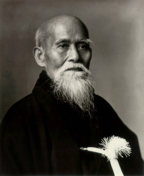

Qu'est-ce que l'Aïkido ?
L'Aïkido est un art martial non-violent d'origine japonaise, c'est-à-dire que les techniques martiales utilisées sont des réactions à une saisie ou une attaque du partenaire. Plutôt qu'user de sa propre force pour maîtriser l'assaillant, l'aïkidoka utilisera celle du partenaire pour le neutraliser. En effet, le but de l'Aïkido n'est pas de vaincre mais d'éliminer la menace.
En japonais, Aïkido signifie "voie de l'harmonie". Cette harmonie se trouve dans toute la pratique, que ce soit avec soi-même ou avec son partenaire. Le respect et la discipline sont également des valeurs de cet art. Pour autant, la pratique a traditionnellement lieu dans la bonne humeur.
Créé au début de XXème siècle par Morihei Ueshiba, l'Aïkido est une synthèse d'arts martiaux anciens. En plus des techniques à mains nues, il comporte des techniques au bokken (sabre en bois), jō (bâton court), et tantō (couteau).
Il n'y a pas de compétition, plutôt que se mesurer aux autres, l'essence de l'Aïkido consiste a chercher à améliorer en permanence sa technique, son efficacité et son esthétique. L'accent est donc mis sur le développement personnel.
Il est possible de se consacrer à l'Aïkido à tout âge en adaptant sa pratique à sa condition physique.
